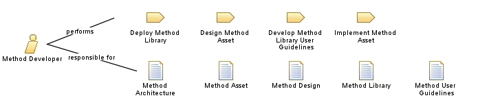

| Role: Method Developer |
 |
|
Relationships
 |
||
| Primary Performs | ||
|---|---|---|
| Modifies |
|
|
Main Description
The role typically has these responsibililities:
|
Staffing
| Skills | It is important for a person playing this role to have an in-depth understanding of the underlying process
definition and available tools to be able to make informed choices for tailoring. Ideally, a person playing this role
should have had multiple experiences working on software projects, and should understand the various considerations to be
made when tailoring processes. |
|---|---|
| Assignment Approaches | Individuals filling this role are often part of a process group that defines organizational configurations and act as process mentors on projects. It is common practice for organizations undergoing a process transformation to look for resources outside the company for filling this role for the initial pilot projects. |
Licensed Materials - Property of IBM |